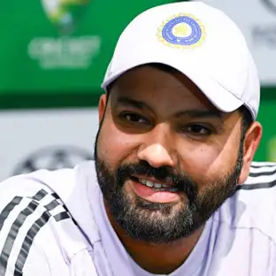
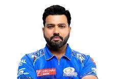
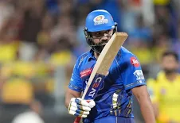

Learn about Shivaji Maharaj, Learn about Virat Kohli, Learn about MS Dhoni.



Rohit Sharma (born 30 April 1987) is an Indian international cricketer and the captain of the Indian cricket team in Test and ODI formats. He is widely regarded as one of the greatest ODI opening batters of all time. He is a right-handed batsman who plays for Mumbai Indians in the Indian Premier League and for Mumbai in domestic cricket. Rohit previously captained India in all three formats. After leading India to victory at the 2024 Men's T20 World Cup, he announced his retirement from T20Is. He also led India to victory in the 2025 ICC Champions Trophy.
Youth career
Sharma made his List A debut for West Zone against Central Zone in the Deodhar Trophy at Gwalior in March 2005. Batting at number eight, he scored 31 not out as West Zone won by 3 wickets with 24 balls remaining. Cheteshwar Pujara and Ravindra Jadeja made their debuts in the same match. It was Sharma's unbeaten innings of 142 in 123 balls against North Zone at the Maharanna Bhupal College Ground in Udaipur in the same tournament that brought him into the limelight. He visited Abu Dhabi and Australia with the India A squad and was then included among India's 30-member probable's list for the upcoming ICC Champions Trophy tournament, although he did not make the final squad.
Sharma made his first-class debut for India A against New Zealand A at Darwin in July 2006. He scored 57 and 22 as India won by 3 wickets. He made his Ranji Trophy debut for Mumbai in the 2006–07 season and scored 205 off 267 balls against Gujarat. Mumbai went on to win the tournament with Sharma scoring a half-century in his second innings in the final against Bengal.
Sharma has spent his entire domestic first-class career at Mumbai. In December 2009, he made his highest career score of 309 not out in the Ranji Trophy against Gujarat. In October 2013, upon the retirement of Ajit Agarkar, he was appointed team captain ahead of the 2013–14 season.